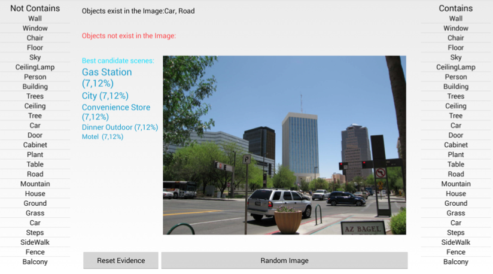

Mahmut Demir
You can read about my academic research here:
Place Detection and Recognition
I am interested in how places are represented, detected and recognized. In our work, place is defined slightly different from the terminology: Place is a collection of temporally consecutive images in which visual content is similar. Our approach is based on representing each image as a region adjacency graph and apply graph matching techniques to temporally cluster images sequences based on graph similarity and coherency. Each detected place is represented with a so-called "Segments Summary Graph" which encodes spatio-temporal relations of segments in detected place. Our TORK paper (in Turkish) on Place Detection won "The Best Paper Award" and we have submitted another paper to ICRA.

Video Abstraction via Segments Summary Graphs
In our paper Video Summarization via Segments Summary graphs in ICCV'15 we applied our graph based place detection approach on video summarization problem and obtained results that outperforms state-of-the art summarization approaches. Video summarization is based on the coherency analysis of segmented video frames as represented by region adjacency graphs. Similar segments across consecutive region adjacency graphs are matched and tracked using an efficient graph matching technique. Shot boundaries are detected based on a coherency score that measures the appearances and disappearances of tracked segments. As such, it is possible to form a compact representation of each detected shot based on prevalent segmented regions and their relations - referred to as the "segments summary graphs". Furthermore, the segments summary graph is amenable for further semantic analysis and understanding of the scene.

Scene categorization using Naive Bayes Classifier
In this work, we applied Naive Bayes Classifier to classify a given image into one of predefined scene categories. We used an open source image database which contains large amount of annotated images with over 900 scene categories. For our case, we applied categorization for 50 scenes. Classification was based on objects detected within image and class conditional probabilities were extracted from scene-object relation table we created. In order to test our algorithm, we developed an android mobile application in which test user was shown a random image and requested to enter some objects exists and do not exist within given image. After each evidence entry, best matching scene categories shown to user.
Success rate of our algorithm was directly related to training data. In some of case, user is shown an image of some category but some objects within image might not be in the training data of that category. Second, some scene categories have identical object occurrence distribution with other categories which causes category of given image not recognized correctly. Third, some objects such as windows or trees in an image has multiple occurrences in images. Because these occurrences increase conditional probabilities, stating object existence or absence might not be enough. Instead, it would be wise to state number of occurrence of object either qualitatively(small, many) or quantitatively(1,2,3..). Report Poster
